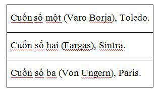
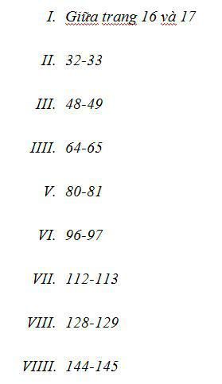

Thực ra quỷ luôn luôn ranh mãnh.
Thực ra không phải lúc nào nó cũng xấu xí như người ta nói.
J. Cazotte, CON QUỶ ĐANG YÊU.
Chỉ còn vài phút là tới giờ xuất phát của chuyến tàu tốc hành đi Lisbon, gã nhìn thấy cô gái. Corso đứng trên sân ga, chuẩn bị leo lên toa – COMPANHIA INTERNACIONAL DE CARRUAGEMS-CAMAS – thì chợt va phải cô trong đám hành khách xô đẩy nhau về phía mấy toa hạng nhất. Cô đeo một cái túi nhỏ và vẫn mặc cái áo len thô màu xanh, nhưng lúc đầu gã không nhận ra. Gã chỉ có cảm giác đôi mắt xanh nhạt gần như trong suốt và mái tóc rất ngắn hình như quen quen. Gã nhìn theo tới khi cô biến mất ở đằng sau cách gã hai toa. Tiếng còi tàu nổi lên. Khi đã leo lên tàu và người gác sập cửa sau lưng gã, Corso mới nhớ ra: người con gái ngồi đầu bên kia bàn trong buổi tụ tập của Boris Balkan với nhóm của ông ta trong quán cà phê.
Gã đi dọc theo hành lang tới khoang của mình. Những ngọn đèn nhà ga trôi qua mỗi lúc một mau ngoài cửa sổ, còn con tàu cứ kêu lách cách nhịp nhàng. Khó nhọc lách qua những khoang tàu chật hẹp, gã treo cái áo choàng và áo khoác trước khi ngồi lên giường, đặt cái túi vải bên cạnh. Bên trong túi, ngoài Chín cánh cửa và tệp bản thảo Dumas còn có cuốn sách của Les Cases, Hồi ký đảo Sainte Hélène:
Thứ sáu, mười bốn tháng Bảy năm 1816. Suốt đêm Hoàng đế khó chịu trong người…
Gã châm một điếu thuốc. Thỉnh thoảng, khi ánh sáng ngoài cửa sổ quét qua lại trên mặt, gã liếc nhìn ra ngoài rồi quay lại với chuyện kể về cơn hấp hối kéo dài của Napoléon và sự quỷ quyệt của viên giám ngục người Anh, Sir Hudson Lowe. Gã cau mày đọc, chỉnh lại cặp kính trên sống mũi. Đôi lần gã ngừng đọc nhìn chằm chằm bóng mình trên kính cửa sổ mà nhăn mặt làm trò với chính mình. Tới tận bây giờ gã vẫn thấy phẫn nộ với những kẻ chiến thắng đã áp đặt kết cục bi thảm cho con người vĩ đại thất thế kia, giam cầm ông trên hòn đảo nhỏ giữa Đại Tây Dương. Thật lạ, khi rà soát những sự kiện lịch sử và những cảm giác trước đây của gã về chúng từ góc nhìn toàn diện và sáng sủa của gã hiện giờ. Cái gã Lucas Corso từng kính cẩn chiêm ngưỡng thanh kiếm của người cựu chiến binh Waterloo trở nên xa xăm làm sao; cái gã trai hấp thụ những chuyện hoang đường của dòng họ với lòng nhiệt thành đến hung hăng, tín đồ từ bé của Bonaparte, độc giả cuồng nhiệt của những cuốn sách có tranh khắc minh họa những chiến dịch vinh quang, những cái tên vang rền như trống trận: Wagram, Jena, Smolensk, Marengo… Gã trai nhẹ dạ ấy đã thôi tồn tại lâu rồi; linh hồn mờ mịt của hắn thỉnh thoảng lại hiện ra trong ký ức của Corso, giữa những trang sách, trong một thứ mùi hay một âm thanh, hoặc xuyên qua cửa sổ tối đen trong cơn mưa đêm từ một miền xa ập tới.
Người soát vé rung chuông cửa, cho gã biết nửa giờ nữa toa ăn sẽ đóng cửa. Corso gập sách lại. Gã mặc áo khoác, quàng túi lên vai, đi ra ngoài. Đến cuối hành lang, một ngọn gió lùa dọc suốt lối đi dẫn tới toa giường nằm bên cạnh. Gã cảm thấy tiếng động ầm ầm dưới chân khi xuyên qua toa hạng nhất. Né mình nhường mấy hành khách đi qua, gã nhìn vào khoang bên cạnh, khách chỉ có chừng một nửa. Cô gái ở đó, bên cạnh cửa, áo len, quần jean, bàn chân không giày gác lên chỗ ngồi đối diện. Cô rời mắt khỏi cuốn sách, ngước lên khi gã qua, mắt họ gặp nhau. Gần như gã đã gật đầu với cô, nhưng thấy đối phương không tỏ vẻ nhận ra mình, gã lại thôi. Hẳn cô cảm thấy gì đấy, vì cô nhìn gã với vẻ dò hỏi. Nhưng lúc này gã đã tiếp tục đi về cuối hành lang.
Gã ngồi ăn bữa tối, người đu đưa theo nhịp lắc của con tàu, trước khi toa ăn đóng cửa gã còn kịp uống một cốc cà phê và một cốc gin. Bên ngoài, vầng trăng mang theo cái quầng như làm bằng tơ sống lơ lửng giữa trời. Những cột điện thoại lướt nhanh trên cánh đồng đen sẫm, loang loáng lên khung cho một chuỗi hình ảnh tĩnh phát ra từ một cái máy chiếu chỉnh tồi.
Trên đường trở lại chỗ nằm, gã gặp cô gái ngoài hành lang toa hạng nhất. Cô mở cửa sổ, mặc cho làn gió đêm lạnh lẽo tạt vào mặt. Khi gã tới gần lách người qua, cô chợt xoay lại đối diện với gã.
“Em biết ông,” cô nói.
Ở gần đôi mắt xanh còn nhạt hơn, giống như bằng tinh thể lỏng tỏa sáng trên làn da rám nắng. Bây giờ mới là tháng Ba, thế nhưng, với mái tóc ngắn rẽ ngôi như một gã trai, làn da nâu khiến cô trông khác thường, dáng khỏe mạnh thể thao, khó dò một cách đáng yêu. Dáng cao, mảnh khảnh, mềm mại. Và rất trẻ.
“Phải,” Corso đáp rồi ngừng lại một chút. “Mấy bữa trước, ở quán cà phê.”
Cô mỉm cười. lại một tương phản khác, lần này là giữa hàm răng trắng và nước da nâu. Miệng cô rộng, đường nét rõ ràng. Một cô nàng xinh đẹp. Flavio La Ponte hẳn sẽ quệt bộ ria xoắn mà nói vậy.
“Ông là người đã hỏi về d’Artagnan.”
Làn gió mát từ ngoài cửa sổ thổi bay tóc cô. Đôi chân vẫn không mang giày. Cái túi đeo màu trắng nằm trên sàn bên cạnh chỗ ngồi trống của cô. Gã liếc nhìn theo bản năng cuốn sách nằm đó: Những chuyện phiêu lưu của Sherlock Holmes. Một cuốn rẻ tiền bìa mềm, gã nhận xét. Sách in ở Mexico, nhà Porrua phát hành.
“Rồi cô sẽ bị lạnh đấy,” gã nói.
Miệng vẫn mỉm cười, cô gái lắc đầu, nhưng vẫn xoay tay nắm đóng cửa sổ lại. Corso đã chuẩn bị đi tiếp lại dừng tìm một điếu thuốc. Theo thói quen, gã moi điếu thuốc từ trong túi đặt lên miệng, song chợt nhận ra cô đang nhìn mình.
“Cô hút thuốc không?” gã ngập ngừng hỏi, tay dừng lại nửa chừng.
“Thỉnh thoảng.”
Gã cắm điếu thuốc vào miệng rồi móc ra một điếu khác. Một điếu thuốc đen, không đầu lọc, nhàu nát như mọi thứ trên mình gã. Cô cầm lấy, lật tìm nhãn hiệu. Rồi cúi người về phía Corso châm thuốc sau khi gã châm điếu của mình bằng que diêm cuối cùng trong bao.
“Nặng thật,” cô nói và nhả ngụm khói đầu tiên trong miệng ra, nhưng không có biểu hiện gì thái quá như Corso nghĩ. Cô có kiểu cầm thuốc khá lạ bằng ngón cái và ngón trỏ, để điếu thuốc cháy chìa ra ngoài. “Ông ở toa này à?”
“Không, toa bên cạnh.”
“Ông thật may vì có giường nằm.” Cô vỗ vào túi quần jean, ý chỉ một ví tiền rỗng. “Ước gì em cũng có. May mà trong toa ít người.”
“Cô là sinh viên à?”
“Gần như thế.”
Tàu kêu ầm ầm khi vào đường hầm. Cô gái quay lại, như thể bóng đêm ngoài đó khiến cô chú ý. Bồn chồn và nhạy bén, cô tựa đầu lên cái bóng của chính mình trên cửa sổ. Có vẻ như đang mong đợi gì đó từ luồng gió reo ù ù bên ngoài. Rồi, khi con tàu ló ra ngoài và những ngọn đèn nhỏ lại tiếp tục phết lên màn đêm như những vệt bút lông mỗi khi tàu đi qua, cô mỉm cười, xa vắng.
“Em yêu những con tàu,” cô nói.
“Tôi cũng thế.”
Cô gái vẫn quay ra, mấy ngón tay khẽ chạm vào cửa sổ. “Hãy tưởng tượng,” cô nói và mỉm cười lưu luyến, rõ ràng đang nhớ lại thứ gì đó. “Ra đi từ Paris buổi tối để rồi thức dậy trên eo Venice, đường đi Istanbul…”
Corso nhíu mày. Cô ấy bao tuổi rồi? Mười tám, nhiều nhất là hai mươi.
“Chơi bài xì,” gã đề xuất, “giữa Calais và Brindisi.”
Cô nhìn gã chăm chú hơn.
“Không tệ.” Cô nghĩ một chút. “Sâm banh cho bữa sáng giữa Vience và Nice?”
“Hấp dẫn đấy. Giống như đi rình coi Basil Zaharoff.”
“Hay làm một chầu túy lúy với Nijinsky.”
“Cuỗm ngọc trai của Coco Chanel.”
“Tán tỉnh Paul Morand… hay ngài Barnabooth.”
Họ bật cười, Corso với nụ cười thì thào, còn cô cười cởi mở, trán vẫn áp lên lớp kính cửa lạnh lẽo. Tiếng cười của cô to, giòn giã, thẳng thắn, nghe như con trai, rất hợp với mái tóc và đôi mắt xanh sáng rực.
“Tàu không còn được thế nữa,” gã nói.
“Em biết.”
Ánh đèn từ một trạm tín hiệu vụt qua như một tia chớp. Tiếp đến là một sân ga vắng vẻ sáng lờ mờ với một biển tên không đọc được vì tàu đi nhanh. Mặt trăng trên cao đôi lúc soi tỏ đường nét lộn xộn của cây cối và các mái nhà. Tựa như chúng đang cùng con tàu lao vào một cuộc đua điên rồ không có đích.
“Ông tên gì?”
“Corso. Còn cô?”
“Irene Adler.”
Gã nhìn cô chăm chú, cô lặng yên tiếp nhận ánh mắt soi mói.
“Không giống một cái tên riêng cho lắm.”
“Corso cũng vậy thôi.”
“Cô nhầm. Tôi là Corso[1]. Kẻ lang bạt.”
“Ông không giống một người lang thang khắp đó đây. Ông có vẻ trầm lặng.”
Gã hơi nghiêng đầu nhìn đôi bàn chân trần của cô gái trên sàn. Gã chắc cô cũng đang nhìn gã chăm chú, dò xét. Khiến gã cảm thấy không thoải mái. Điều đó không bình thường. Cô quá trẻ, gã tự nhủ. Và quá quyến rũ. Bất giác gã sửa lại cặp kính cong rồi nhích người rời đi.
“Chúc chuyến đi vui vẻ.”
“Cảm ơn.”
Gã đi mấy bước, biết rằng cô vẫn đang nhìn mình.
“Có lẽ ta sẽ gặp nhau đâu đó,” cô nói với theo.
“Có thể.”
Không thể. Đó là gã Corso khác kia, kẻ đang trên đường về, lòng đầy lo âu, Quân đoàn Thần thánh sắp vùi tan trong tuyết. Ngọn lửa cháy thành Mạc Tư Khoa nổ lách tách theo bước chân gã. Gã không thể để thế, vì vậy gã dừng bước rồi quay lại. Và khi gã quay lại, gã mỉm cười như con sói đói.
“Irene Adler,” gã nhắc lại, cố gắng nhớ lại. “Study in Scarlet?”
“Không,” cô đáp. “Một vụ bê bối ở Bohemia.” [2] Bây giờ cả cô cũng cười, cặp mắt xanh như những viên ngọc lục bảo sáng rực trong ánh sáng nhợt nhạt ở hành lang. “The Woman, ông bạn Watson thân mến của em ạ.”
Corso vỗ trán như chợt nhớ ra.
“Lớp một,” gã nói. Và gã chắc họ sẽ gặp lại nhau.
GÃ CHỈ Ở LẠI LISBON không tới năm mươi phút. Vừa đủ để di chuyển từ ga Santa Apolónia tới ga Rossio. Một giờ rưỡi sau gã bước xuống sân ga Sintra, dưới bầu trời đầy những tảng mây thấp làm nhòa đi những ngọn tháp xám u buồn của lâu đài Da Pena trên ngọn đồi xa. Không thấy chiếc taxi nào, gã đành đi bộ tới khách sạn nhỏ có hai ống khói lớn đối diện với Điện National. Lúc này là mười giờ sáng ngày thứ Tư, quanh khu dạo mát không thấy bóng khách du lịch và xe ngựa chở khách. Gã dễ dàng thuê được một buồng trông ra một vùng đất thấp cao lổn nhổn, nơi có những ngọn tháp và mái nhà cổ kính nhô lên trên những tàng cây dày đặc, những khu vườn tàn lụi ngạt thở dưới những búi cây thường xuân.
Sau khi tắm vòi sen và uống ly cà phê, gã hỏi thăm Quinta da Soledade, người tiếp tân liền chỉ cho gã, đi ngược con đường lên là tới. Vẫn không có chiếc taxi nào, nhưng có mấy chiếc xe ngựa. Corso mặc cả giá và mấy phút sau gã đã lướt qua bên dưới những đường diềm hoa mỹ của tòa tháp đá Regaleira. Tiếng vó ngựa dội lại từ những bức tường đá tối tăm, những mương máng và vòi phun nước chảy ào ào, những bức tường phủ kín dây thường xuân, những rào chắn và thân cây, những bậc đá rêu phong và những viên ngói lợp cổ kính trên mái trang viện bỏ hoang.
Quinta da Soledade là một tòa nhà vuông vức từ thế kỷ mười tám có bốn ống khói và mặt tiền trát thạch cao màu vàng đất đầy vết ố và vệt nước. Corso ra khỏi xe ngựa, đứng nhìn một lát trong sân trước khi mở cánh cổng sắt. Hai pho tượng đá xanh xám ám rêu dựng trên cột đá granit hai bên đầu tường. Một bên là tượng bán thân của một phụ nữ. Bên kia có lẽ cũng thế, nhưng các nét khắc của khuôn mặt đã bị dây thường xuân phủ kín cả trong lẫn ngoài.
Đám lá khô lạo xạo dưới chân Corso khi gã tiến về phía ngôi nhà. Những pho tượng đá sắp hàng dọc theo lối đi, hầu hết đều nứt vỡ nằm lăn lóc bên những bệ đá trơ trụi. Vườn trống quạnh hiu. Cây cối tràn khắp cả, chờm lên ghế băng và lấn vào trong các xó tường. Một hàng rào sắt uốn để lại những vệt gỉ nâu trên phiến đá xanh rêu. Phía bên trái gã, trong một hồ nước nhỏ mọc đầy cây thủy sinh là một vòi phun đá lát đã rạn vỡ vươn trên đầu một thiên thần mũm mĩm cụt tay, đôi mắt trống rỗng, ngả đầu lơ mơ trên một quyển sách. Từ trong miệng thiên thần một tia nước rỏ giọt. Không gian tràn ngập một nỗi buồn vô tận khiến Corso không khỏi cảm khái. Quinta de Soledade, gã nhắc lại. Ngôi nhà cô đơn. Cái tên thật hợp.
Gã bước lên những bậc thềm đá đưa tới cánh cửa và ngước nhìn. Dưới nền trời u ám, chiếc đồng hồ mặt trời với những chữ số La Mã trên tường chẳng chỉ giờ nào. Bên trên nó khắc một dòng chữ: OMNES VULNERANT, POSTUMA NECAT.
Mọi giờ thương nhân, giờ cuối sát nhân[3].
“ÔNG TỚI VỪA ĐÚNG LÚC,” Fargas nói. “Để tiến hành nghi lễ.”
Corso hơi lúng túng chìa tay ra. Victor Fargas cao và gầy như một nhân vật trong tranh El Greco. Lão tuồng như cử động bên trong cái áo len dày và cái quần rộng thùng thình chẳng khác gì con rùa trong cái mai của nó. Bộ ria xén tỉa cầu kỳ, đôi giày lỗi mốt mòn vẹt ánh lên lấp loáng. Bằng cú liếc mắt đầu tiên, Corso thâu tóm toàn bộ những chi tiết ấy, trước khi sự chú ý của gã bị lôi cuốn vào ngôi nhà to lớn trống rỗng với những bức tường trơ trụi, những bức tranh trần rách nát bị nấm mốc xâm thực.
Fargas quan sát kỹ vị khách ở ngay bên cạnh. “Tôi nghĩ ông sẽ vui lòng tiếp nhận một ly brandy,” sau cùng lão nói. Lão khập khiễng đi về cuối hành lang, chẳng cần biết Corso có theo sau hay không. Hai người đi qua mấy căn phòng bỏ không hoặc chỉ chứa đồ đạc hỏng trong một xó. Từ trên trần thò xuống những bóng đèn trơn đầy bụi.
Chỉ có hai phòng tiếp khách thông nhau có vẻ đang được sử dụng. Một cánh cửa trượt ngăn giữa chúng, trên kính cửa khắc chìm những gia huy quý tộc. Cửa mở, để lộ những bức tường trống trải, lớp giấy dán tường cũ in những bức tranh xưa, rồi đồ đạc, những cái đinh gỉ, những giá đèn trống không. Bên trên cảnh trí u buồn này là trần nhà có tranh trang trí kiểu mái vòm với những đám mây, cùng với cảnh hiến tế Isaac[4] ở phần chính giữa. Bóng hình rạn nứt của vị tộc trưởng già tay cầm con dao găm sắp sửa đâm một người trẻ tuổi tóc vàng. Bàn tay ông ta bị một vị thần với đôi cánh lớn giữ chặt. Bên dưới bầu trời được vẽ như thật, những cửa sổ đầy bụi có vài miếng kính được thay bằng bìa trông ra ban công dẫn tới một cái sân, xa nữa là khu vườn.
“Chỉ nhà mình là nhất,” Fargas nói.
Câu nói đượm ý mỉa mai của lão không mấy thuyết phục. Tựa như lão đã quá thường dùng và không còn tin vào hiệu quả của nó nữa. Fargas nói tiếng Tây Ban Nha với giọng Bồ nặng, rất rõ. Lão đi rất chậm, có lẽ vì chân đau, giống như một người có nhiều thời gian nhất trên đời.
“Brandy,” lão nhắc lại, như thể không nhớ họ tới đó làm cái gì.
Corso lơ đãng gật đầu, nhưng Fargas không để ý. Ở đầu bên kia căn phòng rộng có một cái lò sưởi lớn trong đó xếp đầy những súc gỗ. Một đôi ghế tựa so le, một cái bàn và một tủ buýp phê, một ngọn đèn dầu, hai chân nến lớn, một cây vĩ cầm nằm trong hộp và một ít thứ khác. Nhưng trên sàn, trên những tấm thảm trải sàn dày cũ mòn, cách xa các cửa sổ và luồng sáng nặng nề xuyên qua các khung cửa, rất nhiều sách xếp thành chồng ngăn nắp; năm trăm cuốn hoặc hơn, Corso ước lượng, thậm chí cả ngàn cuốn. Trong đó rất nhiều sách chép tay và sách in thời kỳ đầu tiên. Cả những cuốn sách cổ tuyệt diệu đóng bìa da hay dùng giấy da dê. Những tập sách cổ với từng hàng đinh tán lồi trên bìa, những cuốn khổ folio, sách của nhà Elzevir, bìa trang trí những nếp gấp, những vấu lồi, những phù hiệu hoa hồng, khóa hãm, những chữ viết tay điệu nghệ của các tu sĩ thời Trung cổ. Gã cũng để ý thấy cả tá bẫy chuột han gỉ đặt trong các góc nhà.
Fargas sau một hồi lục lọi trong tủ đã quay lại với một cái ly và một chai Rémy Martin. Lão soi nó ra ngoài sáng để xem bên trong.
“Rượu tiên của Chúa,” lão nói với vẻ đắc ý. “Hay là con quỷ.” Chỉ có cái miệng lão cười, bộ ra uốn éo giống như một ngôi sao điện ảnh quá thì. Hai mắt với cái bọng bên dưới – giống như người mất ngủ kinh niên – không hề động đậy, không chút biểu cảm. Corso để ý đôi tay thanh mảnh của lão – dấu hiệu con nhà dòng dõi – khi đưa tay tiếp ly brandy. Cái ly khẽ run khi gã đưa lên môi.
“Ly đẹp,” gã nói để bắt đầu câu chuyện.
Fargas đồng ý rồi làm một cử chỉ nửa tự giễu nửa cam chịu, ngầm chỉ một cách lý giải khác về toàn thể: cái ly, chút rượu brandy trong chai, ngôi nhà trống trơn, sự hiện diện của chính lão. Một bóng ma mệt mỏi, xanh xao và lịch thiệp.
“Tôi chỉ còn một cái ly nữa thôi,” lão thổ lộ bằng một giọng đều đều không sắc thái. “Vì thế mới phải giữ cẩn thận.”
Corso gật đầu. Gã liếc nhìn bức tường trống rồi quay lại với những cuốn sách.
“Hẳn đây từng là một ngôi nhà đẹp.” gã nói.
Fargas nhún vai. “Phải. Nhưng các gia tộc cổ giống như những nền văn minh. Một ngày nào đó chúng sẽ tàn lụi và chết.” Lão thẫn thờ nhìn quanh. Mọi đồ vật thất lạc dường như tái hiện trong đáy mắt lão. “Đầu tiên người ta phải cầu cứu lũ mọi bảo vệ phòng tuyến Danube, nhưng chuyện đó khiến bọn mọi giàu lên rồi cuối cùng trở thành chủ nợ… Rồi tới một ngày chúng nổi loạn và xâm chiếm, cướp sạch mọi thứ…” Đột nhiên lão nghi ngờ nhìn chằm chằm vào mặt khách. “Hy vọng ông hiểu tôi muốn nói gì.”
Corso gật đầu, trình diễn nụ cười đồng lõa dễ coi nhất của gã. “Tuyệt vời,” gã nói. “Giày ống đóng đinh nghiến nát đồ sứ Saxon. Phải thế không? Đầy tớ mặc đồ dạ hội. Lũ nhà quê mới nổi chùi mông trên bản thảo có minh họa.”
Fargas gật đầu thừa nhận. Lão khập khiễng bước lại bên tủ buýp phê tìm cái ly kia. “Tôi còn một chai brandy nữa,” lão nói.
Họ im lặng uống, nhìn nhau như hai thành viên của một hội kín vừa trao đổi xong mật hiệu cùng khẩu lệnh. Rồi nhích lại gần đống sách hơn, Fargas làm điệu bộ bằng bàn tay cầm ly, tựa như Corso chỉ mới thông qua thử thách ban đầu và lão còn muốn gã vượt qua một rào chắn vô hình nữa.
“Chúng đấy. Tám trăm ba mươi tư cuốn. Gần một nửa là vô giá.” Lão nhấp chút rượu rồi lấy đầu ngón tay vạch lên bộ ria ẩm ướt, đoạn đưa mắt ngó quanh. “Đáng tiếc là ông không thấy chúng trong những ngày huy hoàng, khi chúng xếp hàng trên những giá sách bằng gỗ tuyết tùng… Tôi đã cố sưu tầm được năm ngàn cuốn. Đây là số còn sót lại.”
Corso đặt cái túi vải xuống sàn rồi bước lại phía đống sách. Những ngón tay gã run rẩy khát khao theo bản năng. Thật là một cảnh tượng tráng lệ. Gã sửa lại kính và ngay lập tức trông thấy một bản Vasari khổ quarto xuất bản lần đầu năm 1588, cùng cuốn Tractatus của Berengario de Carpi bằng giấy da dê.
“Tôi không bao giờ tưởng tượng được bộ sưu tập Fargas, có tên trong tất cả mọi thư mục, lại được bảo quản như thế này. Chồng đống trên sàn, áp vào tường, trong một ngôi nhà trống…”
“Đời là thế, bạn ạ. Nhưng để thanh minh tôi phải nói rằng tất cả đều trong tình trạng tuyệt hảo. Tôi giữ chúng thật sạch và bảo đảm thông gió. Tôi không để côn trùng hay loài gặm nhấm đụng vào chúng, không để chúng bị tác động bởi ánh sáng, nhiệt độ và hơi ẩm. Thực sự là cả ngày tôi không làm gì khác ngoài những việc như thế.”
“Chuyện gì xảy ra với số còn lại?”
Fargas nhìn ra cửa sổ, tự hỏi mình chính câu hỏi ấy. Lão nhíu mày. “Ông có thể hình dung thế này,” lão trả lời, và khi lão quay lại Corso trông lão thật tội nghiệp. “Ngoài ngôi nhà và vài thứ đồ đạc, cùng với thư viện của cha tôi, tôi chỉ thừa hưởng những món nợ. Bất cứ khi nào có chút tiền, tôi đều mua sách. Khi những khoản tiết kiệm đã tiêu tán hết, tôi tống đi các thứ khác – tranh, đồ gỗ, đồ sứ. Tôi nghĩ ông biết thế nào là một người sưu tầm sách điên cuống. Nhưng tôi bị ám ảnh đến bệnh hoạn. Tôi đau khổ vô cùng khi nghĩ đến bộ sưu tập của mình sẽ tan nát.”
“Tôi biết những người như thế.”
“Thật sao?” Fargas hứng thú nhìn gã. “Tôi vẫn ngờ rằng ông không thể hình dung nó thế nào. Tôi thường trở dậy giữa đêm khuya, lang thang như kẻ mất hồn nhìn những cuốn sách. Tôi nói chuyện với chúng, vuốt ve chúng, thề chăm sóc chúng cả đời… Nhưng tất cả chẳng ích gì. Một hôm tôi quyết định biến hầu hết thành vật hy sinh, chỉ giữ lại những cuốn có giá trị nhất, những cuốn yêu quý nhất. Ông hay bất kỳ ai sẽ chẳng bao giờ hiểu được cái cảm giác khi để bầy kền kền cắn xé bộ sưu tập của mình nó ra sao đâu.”
“Tôi có thể tưởng tượng được,” Corso nói, không hứng thú chút nào với câu chuyện của lão.
“Có thể a? Tôi không nghĩ vậy. Cả triệu năm nữa cũng không thể. Tôi mất hai tháng để từ giã chúng. Sáu mươi mốt ngày đau khổ và một trận ốm gần chết. Cuối cùng họ tới mang chúng đi, tôi tưởng mình phát điên. Tôi nhớ như thể mới ngày hôm qua, mặc dù đã mười hai năm rồi.”
“Còn bây giờ?”
Fargas chìa cái ly như thể nó là một biểu tượng.
“Giờ thì thỉnh thoảng tôi lại đành phải tính chuyện bán sách. Không phải vì cần lắm. Mỗi tuần một lần có người tới làm vệ sinh, đồ ăn thì mua trong làng. Hầu hết tiền là để trả thuế của chính quyền đánh vào ngôi nhà này.”
Lão phát âm chữ chính quyền như thể nói về một đám bại hoại. Corso tỏ vẻ đồng cảm, lại nhìn những bức tường trống. “Ông có thể bán nó đi.”
“Phải,” Fargas đồng ý với vẻ dửng dưng. “Có những điều ông không hiểu.”
Corso cúi xuống nhặt một cuốn khổ folio đóng bằng da dê rồi giở lướt qua đầy hứng thú. De Symmetria của Dũrer, Paris 1557, in lại theo cuốn xuất bản lần đầu bằng tiếng Latinh ở Nuremberg. Còn rất tốt, lề để rộng. Flavio la Ponte sẽ phát rồ nếu nhìn thấy nó. Là ai thì cũng phải phát rồ với nó.
“Thường thì trong bao lâu ông phải bán sách một lần?”
“Hai hoặc ba năm là đủ. Sau khi rà soát kỹ lướng, tôi chọn một cuốn để bán. Đó là nghi lễ tôi nói đến lúc mở cửa cho ông. Tôi có một khách mua, đồng hương của ông. Anh ta đến đây mỗi năm vài lần.”
“Tôi có biết anh ta không?” Corso hỏi.
“Không rõ,” Fargas trả lời, cũng không nói ra tên người đó. “Thực tình tôi đoán đợt này anh ta có thể tới bất cứ ngày nào. Khi ông tới, tôi đang chuẩn bị chọn một nạn nhân…” Lão dùng bàn tay mảnh mai làm động tác như cái máy xén giấy, miệng cười ủ rũ. “Một người chết để những người khác được sống cùng nhau.”
Corso nhìn lên trần, như thường lệ làm một phép so sánh. Abraham, với một vết rách sâu trên mặt, đang cố hết sức giằng lại bàn tay cầm con dao. Thiên thần dùng một bàn tay giữ chặt tay Abraham, bàn tay kia trỏ vào mặt ông quở trách thậm tệ. Bên dưới lưỡi dao, Isaac kê đầu trên một tảng đá chờ đợi, cam chịu số mệnh. Chàng trai tóc vàng hai má hồng hồng này trông như một người Hy Lạp trẻ tuổi không bao giờ biết nói không. Xa xa có một con cừu đang cố thoát khỏi đám bụi gai, và Corso ngầm biểu quyết tự do cho nó.
“Tôi nghĩ ông không còn lựa chọn nào khác,” gã nhìn thẳng vào mặt Fargas nói.
“Nếu có thì tôi đã tìm ra nó.” Fargas cười cay đắng. “Nhưng con sư tử thì đòi chia phần, lũ cá mập cũng ngửi thấy mùi. Đáng tiếc là không còn ai như Công tước d’Artois, vua nước Pháp. Ông biết chuyện này không? Vị Hầu tước già de Paulmy, người sở hữu sáu mươi ngàn cuốn sách, lâm vào phá sản. Để trả nợ, ông bán bộ sưu tập của mình cho Công tước d’Artois. Nhưng ngài Công tước ra điều kiện rằng ông già ấy phải giữ gìn chúng đến khi chết. Bằng cách ấy Paulmy có tiền mua sách bổ sung cho bộ sưu tập, mặc dù nó không còn là của ông ta nữa…”
Lão đút tay vào túi, bước thấp bước cao men theo những chồng sách, xem kỹ từng cuốn, giống như ngài thống chế Montgomery đi duyệt đội ngũ của mình ở El Alamein.
“Đôi khi tôi còn không dám đụng vào hay giở chúng ra nữa.” Lão dừng bước cúi xuống sắp lại một cuốn sách cho thẳng hàng trên tấm thảm cũ. “Tất thảy những việc tôi làm là phủi bụi và nhìn chúng trừng trừng hàng giờ. Tôi biết đến từng chi tiết nhỏ bên trong mỗi cuốn. Coi cuốn này đi: De Revolutionis celestium, Nicholas Copernicus, xuất bản lần thứ hai ở Basle, 1566. Một thứ vớ vẩn, ông không nghĩ vậy chứ? Giống như Polyglot của người đồng hương Cisneros với ông, và cuốn Cronicarum in ở Nurmeberg. Hãy xem cuốn folio nom lạ mắt bên kia: Praxis criminis persequendi của Simon de Coline, 1541. Hay cuốn được đóng theo kiểu tu viện với bốn dải băng nổi và những vấu lồi bên đó. Ông biết bên trong là gì không? The Golden Legend của Jacobo de la Voragine, Basle, 1493, do Nicholas Kesler in.”
Corso lật nhanh The Golden Legend. Một ấn bản đẹp tuyệt vời, lề cũng để rất rộng. Thận trọng trả nó lại chỗ cũ, gã đứng lên, lấy khăn tay lau cái ly. Nó có thể khiến một người trầm tĩnh nhất toát mồ hôi.
“Hẳn ông điên rồi. Nếu bán tất cả chỗ này, ông sẽ chẳng còn vấn đề gì về tiền nong nữa.”
“Tôi biết.” Fargas cúi xuống chỉnh lại một cuốn sách hầu như không thấy lệch khỏi vị trí. “Nhưng nếu bán hết chúng đi, tôi đâu còn lý do dể tiếp tục sống. Vì vậy tôi chẳng để ý là có hay không có vấn đề tiền bạc.”
Corso trỏ một cuốn nằm giữa một hàng sách trong tình trạng rất tệ. Có mấy cuốn sách in từ thời kỳ sơ khai và mấy bản viết tay. Từ cách đóng bìa có thể thấy chẳng có cuốn nào chào đời sau thế kỷ mười tám.
“Ông có rất nhiều truyện hiệp sĩ cổ.”
“Phải. Cha tôi để lại. Ám ảnh suốt đời ông là kiếm đủ chín mươi lăm cuốn trong bộ sưu tập Don Quijote, đặc biệt là những cuốn bị nhà thờ loại bỏ. Ông để lại cho tôi cuốn Don Quijote lạ lùng ở bên kia, cạnh bản in đầu tiên cuốn Os Lusiadas. Đó là bộ bốn tập của nhà Ibarra năm 1789. Ngoài những bức minh họa tương ứng, còn có thêm sáu bức tranh màu nước in ở Anh vào nửa đầu thế kỷ mười tám và một bản facsimile giấy khai sinh của Cervantes in trên giấy hảo hạng. Mỗi người có một nỗi ám ảnh riêng. Trong trường hợp cha tôi, một nhà ngoại giao sống nhiều năm ở Tây Ban Nha, mọi nỗi ám ảnh với ông đều xoay quanh Cervantes. Ở một số người đó là một chứng cuồng. Họ không chấp nhận công việc phục chế, ngay cả khi nó không lưu lại dấu vết gì, hoặc họ sẽ không mua một cuốn sách được xếp hạng quá năm mươi… Đam mê của tôi, như ông thấy, là những cuốn sách nguyên gốc. Tôi sục sạo khắp các quầy sách và các phòng đấu giá, thước kẻ trên tay, bàng hoàng rủn gối mỗi khi tìm thấy một cuốn còn nguyên, chưa bị đào bới. Ông đã đọc câu chuyện hài hước của Nodier về người sưu tầm sách chưa? Chuyện xảy ra với tôi đúng như thế. Tôi sẵn lòng bắn chết bất kỳ một tay thợ đóng sách nào nếu hắn dùng máy xén giấy quá vụng. Tôi cực kỳ hạnh phúc nếu phát hiện một bản in để lề rộng hơn hai milimet so với thứ được mô tả trong các thư mục chuẩn.”
“Tôi cũng sẽ làm thế.”
“Vậy thì xin có lời khen. Hoan nghênh người anh em.”
“Chớ vội thế. Thực chất tôi quan tâm nhiều đến kinh tế hơn là mỹ học.”
“Không sao hết. Tôi ưa ông. Tôi tin là khi đến với sách, đạo lý thông thường không tồn tại nữa.” Lão đứng từ phía bên kia căn phòng nghiêng đầu về phía Corso mà nói như đang thổ lộ tâm tình. “Ông biết không? Người Tây Ban Nha các ông có câu chuyện về một người bán sách ở Barcelona phạm tội giết người. Là tôi thì tôi cũng có thể giết người vì một cuốn sách.”
“Tôi không khuyên ông làm chuyện đó. Đó chỉ là khởi đầu. Giết người chẳng có vẻ là chuyện gì ghê gớm, nhưng rồi ông sẽ phải dối trá suốt đời, như đi bỏ phiếu bầu cử chẳng hạn.”
“Ngay cả bán đi những cuốn sách của chính mình.”
“Ngay cả như vậy.”
Fargas buồn bã lắc đầu. Lão nhăn nhó đứng như vậy một hồi. Rồi lại gần soi mói nhìn Corso một lúc.
“Điều gì dắt dẫn chúng ta,” sau cùng lão nói, “tới với những vấn đề khiến tôi lao tâm khổ tứ khi ông rung chuông cửa… Mỗi lần phải đương đầu với chuyện này, tôi thấy mình như một nhà tu hành từ bỏ đức tin. Ông có ngạc nhiên không khi tôi buộc phải nghĩ nó như một điều báng bổ?”
“Không gì hết. Tôi nghĩ nó đúng là như thế.”
Fargas đau khổ vặn vẹo hai tay. Lão nhìn quanh căn phòng trống và đống sách trên sàn, rồi quay lại nhìn Corso. Nụ cười của lão có vẻ đầy gượng gạo.
“Phải. Báng bổ chỉ có thể biện hộ bằng đức tin. Chỉ một tín đồ mới cảm được tầm vóc kinh khủng của hành vi đó. Chúng ta không cảm thấy khiếp sợ khi xúc phạm một tín ngưỡng mình không quan tâm. Giống như một kẻ vô thần buông lời bất kính. Thật ngớ ngẩn.”
Corso đồng ý. “Tôi biết ông muốn nói gì. Như Julian the Apostate[5] gào lên, Ngươi thắng rồi, O Galilean.”
“Tôi không quen câu này lắm.”
“Có thể nó được ngụy tạo. Một trong hai anh em Marist thường trích dẫn nó hồi tôi còn đi học. Ông ta muốn cảnh cáo bọn tôi không được nghĩ ngợi vẩn vơ. Julian kết thúc cuộc đời trên chiến trường vì bị trúng tên mất máu, nhổ máu vào một thiên đường không có Chúa.”
Fargas thừa nhận, như thể những chuyện đó hết sức gần gũi với lão. Có gì đó bối rối trong cái nhếch mép là lạ của lão, trong ánh mắt chằm chằm của lão.
“Bây giờ tôi cảm thấy như vậy đó,” lão nói. “Tôi trở dậy vì không ngủ được. Tôi đứng ở chỗ này, quyết định làm một việc bất kính khác.” Trong khi nói lão dịch lại gần Corso, gần đến mức gã chỉ muốn lùi lại một bước. “Làm một điều tội lỗi, chống lại chính mình và chống lại chúng… Tôi chạm vào một quyển sách, rồi đổi ý chọn cuốn khác, rồi lại trả về chỗ cũ… Tôi phải hy sinh một cuốn để những cuốn khác được sống, bẻ gãy một cành để giữ lại cả cây…” Lão giơ cao tay phải. “Tôi thà mất đi một ngón tay.”
Tay lão run run khi làm cử động này. Corso gật đầu. Gã biết cách lắng nghe. Đó là một phần của công việc. Thậm chí gã có thể hiểu. Nhưng không tham gia. Chuyện đó không liên quan tới gã. Như Varo Borja đã nói, gã là lính đánh thuê, và gã phải trả tiền cho các cuộc viếng thăm này. Cái Fargas cần bây giờ là một linh mục để xưng tội, hay là một bác sĩ tâm lý.
“Không ai trả tiền cho ngón tay của người sưu tầm sách cũ,” Corso nhẹ nhàng nói.
Câu đùa chìm nghỉm trong ánh mắt trống rỗng mênh mông của Fargas. Cái nhìn của lão xuyên qua gã. Trong đôi con ngươi giãn ra và ánh mắt thẫn thờ của lão chỉ có những cuốn sách.
“Vậy tôi phải chọn cuốn nào đây?” Fargas tiếp tục. Corso móc một điếu thuốc đưa cho lão, nhưng Fargas không nhận ra. Chìm đắm, miên man, lão chỉ lắng nghe chính lão, không nhận thức bất cứ thứ gì ngoài tâm cảm đầy đớn đau dằn vặt của mình. “Sau khi nghĩ ngợi khá nhiều, tôi đã chọn được hai cuốn thích hợp.” Lão nhặt hai cuốn sách trên sàn đặt lên bàn. “Ông nghĩ sao?”
Corso cúi xuống những cuốn sách. Gã mở ra ở trang có minh họa, một bản khắc gỗ với ba người đàn ông và một người đàn bà đang làm việc trong hầm mỏ. Đó là De re metallica của Giorgius Agricola tiếng Latinh xuất bản lần thứ hai, do Froben và Episcopius in ở Basle, chỉ năm năm sau ấn bản đầu tiên 1556. Gã lẩm bẩm tán thưởng khi đốt điếu thuốc.
“Như ông thấy, lựa chọn không hề dễ dàng.” Fargas chăm chú theo dõi cử chỉ của Corso. Lão lo lắng nhìn gã lật từng trang, khẽ chạm vào chỉ bằng đầu ngón tay. “Mỗi lần tôi chỉ bán một cuốn. Và không phải bất kỳ cuốn nào cũng được. Sự hy sinh phải đảm bảo rằng số còn lại sẽ được an toàn trong sáu tháng nữa. Đó là tế vật tôi dành cho Minotaur[6].” Lão gõ gõ thái dương. “Mỗi chúng ta đều có nó ở trong đầu[7]… Lý trí tạo ra nó, và nó gieo rắc nỗi kinh hoàng.”
“Sao ông không bán vài cuốn ít giá trị cùng một lúc? Khi ấy ông đủ tiền và vẫn giữ được những cuốn hiếm hơn. Hoặc những cuốn ông quý hơn.”
“Xếp vài cuốn trên đầu những cuốn khác ư?” Fargas rùng mình. “Tôi làm thế sao được. Tất cả chúng đều có linh hồn bất tử như nhau. Với tôi tất cả đều có quyền như nhau. Đương nhiên tôi có những cuốn sách mình yêu quý nhất. Vì cớ gì tôi không có? Nhưng tôi không bao giờ có cử chỉ phân biệt, hoặc một câu nói khiến chúng trở nên cao quý hơn những đồng bọn kém được ưu ái. Ngược lại là khác. Nhớ rằng Chúa Trời đã chọn chính con trai mình làm vật hiến tế. Để chuộc tội cho loài người. Và Abraham…” Có vẻ như lão muốn ám chỉ bức tranh trần, bởi lão ngước nhìn lên buồn bã mỉm cười với hư không, ngưng nửa chừng câu nói còn dang dở.
Corso mở cuốn thứ hai, một cuốn khổ folio Ý tuyệt đẹp, đóng bìa da dê vào khoảng năm 1700. Bên trong là tập thơ Virgil, nhà xuất bản Giunta Venice, in năm 1544. Cử động này khiến Fargas bừng tỉnh.
“Đẹp, phải không?” Lão bước tới trước mặt Corso, vội vã chụp cuốn sách từ tay gã. “Nhìn trang tít này, nhìn đường viền kiến trúc này. Một trăm mười ba bản khắc gỗ, toàn bộ hoàn hảo, trừ trang 345 có một chỗ phục chế rất nhỏ rất xưa, rất khó thấy, ở góc bên dưới. Thật ngẫu nhiên mà nó trở thành con cưng của tôi. Xem đây: Aceneas ở địa ngục, bên cạnh nữ tiên tri. Ông đã khi nào thấy thứ gì như thế chưa? Hãy nhìn những ngọn lửa phía sau bức tường ba tầng này, rồi cái vạc dầu dành cho những kẻ bị nguyền rủa, con quái điểu cắn xé ruột gan họ…” Người sưu tầm sách già thực sự kích động, mạch máu trên cổ tay và thái dương lão đập thình thình thấy rõ. Giọng nói trở nên thâm trầm khi lão đưa cuốn sách lên gần mắt để nhìn rõ hơn. Vẻ mặt lão rạng rỡ. “Moenia amnlata videt, triplici circundata muro, quae rapidus flamnis ambit torrentibus amnis.” Lão ngừng lại, mê mẩn. “Người thợ khắc có cách nhìn như người thời Trung cổ, bạo liệt và đẹp đẽ về Địa ngục của Virgil.”
“Một cuốn sách tuyệt vời,” Corso rít một hơi thuốc, khẳng định.
“Còn hơn thế nữa. Hãy cảm nhận chất giấy. Esemplare buôn e genuino con le figure assai ben impresse, các catalô cổ đều khẳng định như vậy.” Sau khi để cơn kích động bùng phát, Fargas lại một lần nữa dán mắt vào hư không, mê mải, đắm chìm trong vùng tối cơn ác mộng của lão. “Tôi nghĩ sẽ bán cuốn này.”
Corso mất hết kiên nhẫn, “Tôi không hiểu. Rõ ràng đây là một trong những cuốn ông yêu thích. Agricola cũng vậy. Tay ông run lên khi sờ vào chúng.”
“Tay tôi? Hẳn ông muốn nói linh hồn tôi bốc chảy trong lửa địa ngục. Tôi nghĩ tôi đã giải thích rồi. Cuốn sách phải hy sinh không bao giờ là cuốn khiến tôi thờ ơ. Nếu không thì việc làm đau khổ này có ý nghĩa gì? Một giao dịch bẩn thỉu dưới áp lực của thị trường, mấy cuốn sách rẻ mạt thay cho một cuốn đắt tiền…” Lão lắc đầu hung hãn và khinh bỉ, ánh mắt u ám quét quanh căn phòng như muốn tìm ai đó để trút cơn giận. “Đây là những cuốn tôi yêu quý nhất. Chúng tỏa sáng rực rỡ hơn tất cả số còn lại, vì vẻ đẹp của chúng, vì tình yêu mà chúng dấy lên trong tôi. Đây là những cuốn tay trong tay đi cùng tôi lang thang bên bờ địa ngục… Cuộc đời có thể tước đoạt mọi thứ tôi có. Nhưng không thể biến tôi thành một kẻ bất hạnh khốn khổ.”
Lão loạng choạng bước đi không mục đích trong phòng. Cảnh tượng u buồn, cái chân đau, bộ quần áo nhàu nát, tất cả đều làm tăng thêm vẻ yếu ớt mong manh của lão.
“Đó là lý do vì sao tôi ở lại trong ngôi nhà này,” lão tiếp tục. “Linh hồn của những cuốn sách tôi mất đi lang thang bên trong những bức tường này.” Lão dừng lại trước lò sưởi nhìn những súc gỗ nằm bên trong. “Đôi khi tôi cảm giác chúng trở lại bắt tôi bồi thường. Vì vậy, để chúng bớt giận, tôi cầm cây đàn violon kia chơi hàng giờ liền, lang thang khắp nhà trong bóng tối như một kẻ bị nguyền rủa…” Lão quay lại nhìn Corso, dáng hình lão nổi bật trong khuôn cửa sổ bẩn thỉu. “Người sưu tầm lang thang.” Chầm chậm, lão tới bên cái bàn, đặt tay lên từng cuốn sách, như thể trì hoãn việc quyết định đến tận lúc ấy. Rồi mỉm cười dò hỏi.
“Nếu ở vị trí của tôi, ông sẽ chọn cuốn nào?”
Corso cựa quậy, khó chịu. “Xin miễn cho tôi việc này. Thật may tôi không ở địa vị ông.”
“Đúng vậy. Hết sức may mắn. Ông thật thông minh khi nhận thức được điều này. Một kẻ ngu ngốc sẽ thèm muốn được như tôi. Với toàn bộ kho báu trong tòa nhà này… Nhưng ông còn chưa bảo tôi nên bán cuốn sách nào. Chọn đứa con nào hiến dâng cho Thượng đế.” Bỗng nhiên, khuôn mặt lão trở nên méo mó vì thống khổ, như thể nỗi đau đớn ở cả trong thân thể lão. “Rồi máu nó sẽ vấy bẩn sang tôi và gia đình tôi,” lão nói thêm, rất khẽ và khẩn trương, “đến đời thứ bảy.”
Lão mang trả Agricola về chỗ cũ trên tấm thảm và vuốt ve lớp da dê trên bìa cuốn Virgil, thì thầm, “Máu nó.” Mắt lão ươn ướt, hai tay run rẩy không ngừng. “Tôi nghĩ tôi sẽ bán cuốn này,” lão nói.
Fargas hẳn còn chưa thoát khỏi tâm trạng giày vò, nhưng chẳng còn lâu nữa. Corso nhìn những bức tường trơ trụi, những vết còn lại ở những chỗ treo tranh trên giấy dán tường vàng ố. Cái thế hệ thứ bảy khó mà hiện hữu kia chẳng quan tâm tí nào tới chuyện này. Cũng giống như gia tộc Corso, dòng họ Fargas sẽ kết thúc ở đây. Mãi rồi thì họ cũng được bình an. Làn khói từ điếu thuốc của Corso xông thẳng lên bức họa rách trên trần, giống như cột khói từ cuộc lễ hiến tế trong buổi bình minh lặng lẽ. Nhìn qua cửa sổ ra khu vườn cỏ dại lan tràn, gã tìm kiếm một lối ra, giống như con cừu trong bụi cây gai. Nhưng chẳng có gì ngoài những cuốn sách. Thiên thần đã buông bàn tay cầm dao, vừa khóc vừa bỏ đi. Để lại một mình Abraham, lão khọm già khốn khổ.
Corso hút nốt điếu thuốc rồi vứt vào trong lò sưởi. Gã lạnh và mệt. Bên trong những bức tường trống trải này gã đã phải nghe quá nhiều. Thật đáng mừng là không có tấm gương nào để gã nhìn thấy những biểu hiện trên mặt mình. Gã nhìn đồng hồ mà không biết là mấy giờ. Với kho báu nằm kia, trên những tấm thảm, Victor Fargas đã trả giá quá đắt, bằng nỗi thống khổ triền miên của lão. Với Corso, giờ là lúc bàn chuyện công việc.
“Còn Chín cánh cửa thì sao?”
“Về cuốn đó ư?”
“Chính vì nó tôi mới đến đây. Tôi nghĩ ông đã nhận được thư tôi.”
“Thư ông? Phải, tất nhiên. Tôi nhớ rồi. Đúng vào lúc tất cả những chuyện này… Thứ lỗi cho tôi. Chín cánh cửa. Đương nhiên.”
Lão bối rối nhìn quanh, như một người mộng du chợt tỉnh. Bỗng dưng lão có vẻ mệt mỏi vô chừng, như vừa trải qua một thử thách kéo dài. Lão giơ một ngón tay lên xin một phút nhớ lại, rồi khập khiễng bước tới góc nhà. Ở đó có chừng năm chục cuốn sách trên tấm thảm Pháp phai màu. Corso miễn cưỡng nhận ra hình vẽ mô tả trận thắng của Alexander Đại đế trước vua Ba Tư Darius.
“Ông có biết rằng,” Fargas trỏ vào tấm thảm Gobelin mà hỏi, “Alexander đã dùng kho tàng đoạt được từ tay địch thủ để bảo tồn sách của Homer không?” Lão hài lòng cúi chào hình bóng xơ xác của vị danh tướng xứ Macédonie. “Ông ta là nhà sưu tầm sách như tôi. Một người tốt.”
Corso chẳng quan tâm quái gì đến thị hiếu văn học của Alexander Đại đế. Gã quỳ xuống đọc những tên sách in trên gáy và lề một vài cuốn sách. Toàn bộ đều là chuyên luận về ma pháp, giả kim thuật và nghiên cứu về ma quỷ. Les trois livres de l’Art, Destructor omnium rerum, Disertazioni sopra le apparizioni de’spiriti e pavoli, De origine, moribus et rebus gestis Satanae…
“Ông nghĩ sao?” Fargas hỏi.
“Không tồi.”
Người sưu tầm sách cười mệt mỏi. Lão quỳ xuống cạnh Corso và máy móc sửa lại những cuốn sách để đảm bảo rằng không cuốn nào xê dịch dù chỉ một li so với lần gần đây nhất lão kiểm tra.
“Không tồi chút nào. Ông nói đúng. Ít nhất có mười cuốn cực hiếm. Tôi kế thừa toàn bộ chỗ này từ ông nội tôi. Ông là người say mê thuật giả kim và chiêm tinh học, hội viên Hội Tam điểm. Nhìn xem. Đây là một tác phẩm kinh điển, Infernal Dictionary của Collin de Plancy, ấn phẩm xuất bản lần đầu năm 1842. Và đây là cuốn Compendi dei secreti in năm 1571 của Leonardo Fioravanti… Cuốn sách khổ mười hai kia là Book of Wonders xuất bản lần thứ hai.” Lão mở một cuốn khác và chìa cho Corso thấy một bức minh họa. “Nhìn Isis[8] này… Ông biết đây là cái gì chứ?”
“Tất nhiên. Oedipus Aegiptiacus của Atanasius Kircher.”
“Chính xác. Xuất bản ở Rome năm 1652.” Fargas trả cuốn sách về chỗ rồi nhấc ra một cuốn khác. Corso nhận ra bìa sách đóng kiểu Venice: bọc da đen, năm dải băng nổi và một biểu tượng ngôi sao, song trên bìa không có đầu đề. “Đây là thứ ông tìm, De Umbrarum Regni Novem Portis. Chín cánh cửa của vương quốc bóng tối.”
Corso run lên dù không muốn vậy. Nhìn bề ngoài, ít nhất cuốn sách cũng giống hệt cuốn trong túi gã. Fargas đưa gã cuốn sách và Corso đứng lên lật lật qua. Chúng giống hệt nhau, hay hầu như thế. Lớp da bọc bìa sau cuốn của Fargas hơi bị mòn, có vết cũ của một tấm nhã từng được gắn vào rồi gỡ ra. Phần còn lại không khác chút nào với cuốn của Borja, ngay cả bức tranh số VIIII cũng còn nguyên vẹn.
“Thật hoàn hảo, tình trạng rất tốt,” Fargas nói, diễn đạt chính xác vẻ mặt Corso. “Nó ngao du ngoài đời suốt ba thế kỷ rưỡi, nhưng khi ông giở ra thì nó vẫn mới tinh khôi như vừa in xong. Cứ như thể người thợ in đã ký kết khế ước với ma quỷ.”
“Có khi ông ta đã làm thế,” Corso đáp.
“Tôi không có gì ác cảm với pháp thuật. Tôi bằng lòng trao cả linh hồn để giữ toàn bộ chỗ này.” Lão khua tay như muốn quơ cả căn phòng lạnh lẽo và những hàng sách trên sàn nhà.
“Ông có thể thử,” Corso trỏ Chín cánh cửa mà nói. “Người ta bảo ma pháp nằm trong đó.”
“Không bao giờ tôi tin những điều nhảm nhí đó. Mặc dù bây giờ có lẽ là lúc thích hợp nhất để bắt đầu. Ông không nghĩ thế ư? Người Tây Ban Nha các ông có câu ngạn ngữ: Chẳng còn gì thì cũng còn được nhảy xuống sông.”
“Cuốn sách bình thường chứ? Ông thấy nó có gì lạ không?”
“Chẳng có gì hết. Không mất trang nào. Các bức minh họa đầy đủ, cả chín bức, cộng thêm trang nhan đề. Đúng như khi ông nội tôi mua vào lúc giao thời thế kỷ. Đúng như được mô tả trong các catalô, và giống hệt hai cuốn còn lại, của Ungern ở Paris và của Terral-Coy.”
“Không còn là Terral-Coy nữa. Bây giờ nó thuộc bộ sưu tập của Varo Borja ở Toledo.”
Corso nhận thấy nét mặt Fargas trở nên ngờ vực và cảnh giác.
“Ông nói Varo Borja?” Dường như lão định nói gì thêm, rồi lại đổi ý. “Bộ sưu tập của ông ta rất đặc sắc. Và rất nổi tiếng.” Lão đi đi lại lại trong phòng, mắt nhìn đống sách xếp trên tấm thảm. “Varo Borja…,” lão thận trọng lặp lại. “Một chuyên gia nghiên cứu ma quỷ, đúng không? Một người sưu tầm sách rất giàu. Ông ta đã theo đuổi cuốn Chín cánh cửa đó nhiều năm. Sẵn lòng trả bất cứ giá nào… Tôi không biết là ông ta đã mua được nó. Và ông làm việc cho ông ta.”
“Chỉ đôi khi,” Corso thừa nhận.
Fargas gật đầu mấy cái, vẻ bối rối. “Thật lạ là ông ta lại cử ông đi. Rốt cuộc…”
Lão đột ngột bỏ dở câu nói rồi nhìn cái túi của Corso. “Ông mang theo cuốn sách chứ? Tôi xem được không?”
Hai người bước lại bên bàn, Corso đặt cuốn sách của gã bên cuốn của Fargas. Đúng lúc này, gã nghe hơi thở của lão già trở nên gấp gáp. Vẻ mặt lại trở nên si mê.
“Hãy nhìn nó thật gần,” lão thầm thì, như sợ sẽ đánh thức thứ gì đó bên trong những trang sách. “Chúng thật đẹp đẽ, hoàn hảo. Và giống hệt nhau. Hai trong ba cuốn duy nhất thoát khỏi lửa thiêu, lần đầu tiên về lại bên nhau, kể từ khi chia lìa ba trăm năm mươi năm trước…” Bàn tay lão lại run rẩy. Lão xoa cổ tay để dòng máu bên trong bớt chảy mạnh. “Hãy nhìn chỗ in lỗi ở trang 72, và chữ s bị tách rời này, dòng thứ tư trang 87… Cùng thứ giấy, cùng kiểu chữ. Chẳng phải tuyệt vời sao?”
“Phải.” Corso đằng hắng. “Tôi muốn ở đây ít lâu. Để xem chúng thật kỹ.”
Hai mắt Fargas bắn ra một tia nhìn sắc nhọn. Lão có vẻ do dự.
“Tùy ông,” sau cùng lão nói. “Nhưng nếu ông có cuốn của Terral-Coy thì chắc chắn chúng là thật, không nghi ngờ gì nữa.” Lão tò mò nhìn Corso, cố hiểu gã đang nghĩ gì. “Hẳn Varo Borja biết điều đó.”
“Tôi nghĩ ông ta biết.” Corso nở nụ cười vô hại nhất. “Nhưng tôi được trả tiền để bảo đảm chúng là thật.” Gã vẫn cười. Bọn họ đã đến đoạn khó khăn. “Nhân tiện nói đến tiền bạc, tôi được ủy thác đưa tới ông một lời đề nghị.”
Vẻ tò mò của Fargas biến thành nghi ngờ: “Đề nghị gì?”
“Về tài chính. Đề nghị rất đáng kể đấy.” Corso đặt tay lên cuốn sách thứ hai. “Ông có thể không phải bận tâm về tiền bạc trong một thời gian.”
“Varo Borja sẽ trả tiền?”
“Khả năng là thế.”
Fargas vuốt cằm. “Ông ta đã có một. Ông ta muốn có cả ba cuốn ư?”
Người này có thể hơi điên, nhưng không ngốc. Corso làm một cử chỉ mơ hồ, gã không muốn làm mếch lòng lão. Có lẽ. Một trong những thứ các nhà sưu tầm nhồi nhét trong đầu. Nhưng nếu Fargas bán cuốn sách, lão có thể giữ được cuốn Virgil.
“Ông không hiểu rồi,” Fargas nói. Nhưng Corso quá hiểu. Gã sẽ chẳng đi đến đâu với lão già.
“Quên đi,” gã nói. “Đó chỉ là một ý tưởng.”
“Tôi không bán bậy bạ. Tôi chọn từng cuốn sách. Tôi tưởng tôi đã nói rõ.”
Những mạch máu căng phồng trên mu bàn tay lão rúm lại. Lão đã phát cáu, vì vậy Corso phải để ra mấy phút xoa dịu. Lời đề nghị chỉ là chuyện thứ yếu, một thủ tục rất vặt vãnh. Thực ra thì gã chỉ so sánh thật kỹ hai cuốn sách mà thôi, gã nói. Sau cùng, Fargas nguôi giận và gật đầu đồng ý.
“Tôi không thấy có vấn đề gì,” lão nói, đã bớt ngờ vực. Rõ ràng là lão ưa Corso. Nếu chẳng phải thế, mọi chuyện đã diễn ra khác hẳn. “Mặc dù tôi không thể cung cấp cho ông nhiều tiện nghi ở đây…”
Lão đưa gã theo một lối đi rất hẹp tới một buồng nhỏ hơn có một chiếc piano cũ nát trong góc, một cái bàn bên trên có cái chân nến bằng đồng đầy những giọt sáp, một đôi ghế ọp ẹp.
“Ít ra thì ở đây cũng yên tĩnh,” Fargas nói. “Và kính cửa sổ còn nguyên cả.”
Lão bật ngón tay đánh tách, như thể quên mất chuyện gì đó. Lão biến đi một lát rồi trở lại với chai brandy dở.
“Vậy là cuối cùng Varo Borja cũng tìm cách chộp được nó,” lão nhắc lại. Lão cười một mình, như thể có ý nghĩ nào đó khiến lão rất hài lòng. Rồi lão đặt cái chai và cái cốc trên sàn, cách hai cuốn Chín cánh cửa một khoảng an toàn. Như một chủ nhà chu đáo, lão nhìn quanh để chắc rằng mọi thứ đều ổn, rồi nói bằng giọng mỉa mai trước khi bỏ đi, “Cứ tự nhiên như ở nhà.”
Corso rót chỗ Brandy còn lại vào cốc. Gã lôi cuốn sổ ghi chép ra và bắt đầu làm việc. Gã vẽ ba ô trên một trang giấy. Mỗi ô chứ một con số và một cái tên.

Lần lượt từng trang một, gã ghi lại vắn tắt mọi chỗ khác nhau ở cuốn số một và cuốn số hai, dù rằng rất nhỏ: vết ố trên một trang, mực in ở cuốn này hơi đậm hơn cuốn kia. Khi tới bức minh họa đầu tiên, NEM. PERVT.T QUI N.N LEG. CERT.RIT, kỵ sĩ khuyến cáo người đọc giữ im lặng, gã móc trong túi ra chiếc kính phóng đại bảy lần kiểm tra cả hai bức khắc gỗ, từng hàng một. Chúng giống hệt nhau. Gã nhận ra rằng thậm chí cả lực ép của bản in khắc trên giấy, giống như khi in bằng máy, cũng như nhau. Những nét vẽ và chữ cái bị mờ, bị mất hay bị biến dạng đều ở cùng chỗ trên cả hai cuốn. Thế nghĩa là cuốn một và hai được in lần lượt hay gần như thế ở trên cùng một tổ máy. Giống như anh em Ceniza, Corso đang quan sát một cặp song sinh.
Gã tiếp tục ghi chép. Một chỗ không hoàn chỉnh ở dòng thứ sáu trang 19 khiến gã dừng lại, nhưng gã lập tức nhận ra đó chỉ là một vết mực. Gã giở thêm mấy trang. Hai cuốn sách cùng cấu trúc: hai tờ trắng ở đầu và cuối trang sách cùng 160 trang được khâu thành hai mươi phần, mỗi phần tám trang. Toàn bộ chín bức minh họa trên cả hai cuốn dều chiếm hết cả trang. Chúng được in riêng rẽ trên cùng loại giấy, mặt sau để trống, được đưa vào ngay lúc đóng sách. Vị trí trong cả hai cuốn cũng như nhau:

Hoặc là Varo Borja hoang tưởng, hoặc công việc dành cho Corso rất kỳ quái. Chúng tuyệt không thể là đồ giả. Quá lắm thì cả hai đều là ấn bản của một cuốn sách làm giả nhưng vẫn được in ở thế kỷ mười bảy. Cuốn số một và cuốn số hai đều là hiện thân của sự trung thực xét về mặt giấy in.
Gã uống nốt chỗ rượu còn lại rồi dùng kính lúp kiểm tra bức họa số II. CLAUS. PAT.T., vị ẩn sĩ râu xồm cầm hai chiếc chìa khóa, cánh cửa đóng kín, chiếc đèn lồng nằm trên mặt đất. Gã đặt hai bức họa bên nhau và chợt cảm thấy rất ngớ ngẩn. Thật chẳng khác nào trò chơi Tìm chỗ khác nhau. Gã nhăn mặt. Đời là một cuộc chơi. Và sách phản ánh cuộc đời.
Đúng lúc đó gã thấy nó. Rất bất chợt, y như thứ gì đó chừng như vô nghĩa, khi nhìn từ một góc đúng thì bỗng hiện ra rõ ràng và chính xác. Corso thở ra, như thể sững sờ, như thể muốn cười. Gã chỉ bật ra một âm thanh khô khốc, giống như một tiếng cười hoài nghi nhưng không chút hài hước. Không thể thế. Không ai đùa kiểu ấy. Gã lắc đầu bối rối. Đây không phải là một cuốn sách đố chữ rẻ tiền mua ngoài ga xe lửa. Những cuốn này đã ba thế kỷ rưỡi tuổi. Người thợ in đã mất mạng vì chúng. Chúng nằm trong danh sách cấm của Tòa án Dị giáo. Và có tên trong tất cả những thư mục sách nghiêm túc nhất. “Minh họa số II. Chú thích bằng tiếng Latinh. Một ông già cầm hai cái chìa khóa và một chiếc đèn lồng nằm phía trước cánh cửa đóng chặt…” Nhưng cho đến giờ không ai so sánh hai cuốn sách. Không dễ gì để chúng ở với nhau cùng một chỗ. Hoặc không cần thiết. Lão già với hai chìa khóa. Thế là đủ.
Corso đứng dậy bước lại bên cửa sổ. Gã đứng đó một lúc nhìn xuyên qua những ô kính mịt mờ vì hơi thở của mình. Hóa ra Varo Borja đúng. Aristide Torchia hẳn sẽ cười thầm trên giàn hỏa thiêu ở quảng trường Hoa, trước khi ngọn lửa vĩnh viễn tước đi cảm quan hài hước của ông. Nó thật sáng láng, cái chuyện cười sau khi chết ấy.
-----------------------
[1] Corso là tên một loài chó săn gốc Ý.
[2] A study in Scarlet, A scandal in Bohemia: hai truyện trinh thám của Conan Doyle
[3] “They all wound. The last one kills”: một câu ngạn ngữ thường ghi trên đồng hồ, đại ý nhắc nhở người ta nhớ tới sự vô thường của đời người.
[4] Saac: con trai tộc trưởng Do Thái Abraham sinh ra khi ông này một trăm tuổi, Chúa Trời thử thách Abraham bằng cách lệnh cho ông hiến tế con trai, Abraham tuân lệnh. Đến phút cuối cùng một thiên thần hiện ra ngăn cản. Thay cho Isaac, Abraham dùng một con cừu đực mắc bẫy ở bụi cây gần đó.
[5] Julian the Apostate: Hoàng đế La Mã ngoại đạo cuối cùng. Đồn rằng đây là lời cuối của Hoàng đế trước khi chết. Ngụ ý là sau khi ông chết Cơ Đốc giáo sẽ trở thành đạo giáo chính thống của đế quốc.
[6] Minotaur: quái vật nửa người nửa bò trong thần thoại Hy Lạp. Bị vua Minos nhốt trong một mê cung, mỗi năm có bảy người con trai và bảy người con gái bị tống vào cho nó ăn thịt.
[7] Ở đây Fargas chơi chữ: “Ladyrinth” vừa là mê cung, vừa là phần tai trong của con người.
[8] Isis: nữ thần tôn giáo cổ Ai Cập, được thờ phụng khắp thế giới Hy – La như một hình mẫu của người mẹ hiền vợ thảo, như chủ nhân của tự nhiên và ma thuật.